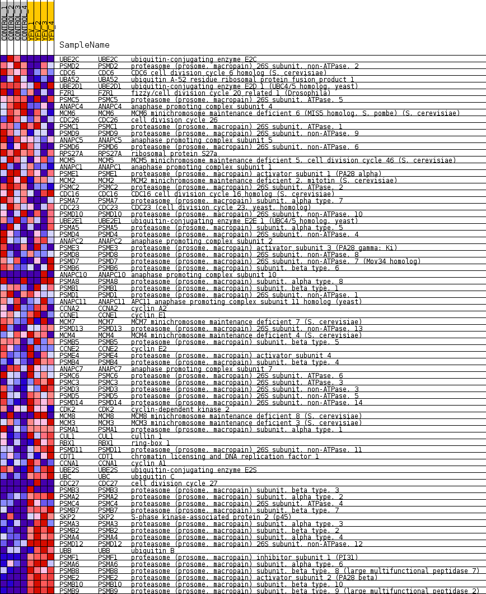
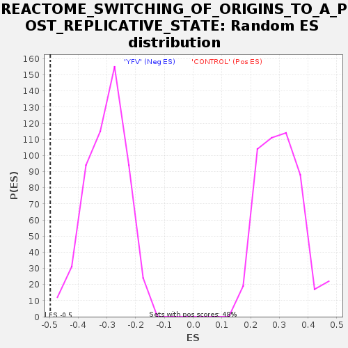

Profile of the Running ES Score & Positions of GeneSet Members on the Rank Ordered List
| Dataset | MATRIZ_GSE99081_collapsed_to_symbols.gsea_CLASE_99081.cls#CONTROL_versus_YFV |
| Phenotype | gsea_CLASE_99081.cls#CONTROL_versus_YFV |
| Upregulated in class | YFV |
| GeneSet | REACTOME_SWITCHING_OF_ORIGINS_TO_A_POST_REPLICATIVE_STATE |
| Enrichment Score (ES) | -0.49707326 |
| Normalized Enrichment Score (NES) | -1.6385453 |
| Nominal p-value | 0.0 |
| FDR q-value | 0.052853674 |
| FWER p-Value | 0.805 |
| SYMBOL | TITLE | RANK IN GENE LIST | RANK METRIC SCORE | RUNNING ES | CORE ENRICHMENT | |
|---|---|---|---|---|---|---|
| 1 | UBE2C | ubiquitin-conjugating enzyme E2C | 617 | 0.775 | -0.0141 | No |
| 2 | PSMD2 | proteasome (prosome, macropain) 26S subunit, non-ATPase, 2 | 711 | 0.738 | 0.0031 | No |
| 3 | CDC6 | CDC6 cell division cycle 6 homolog (S. cerevisiae) | 1376 | 0.555 | -0.0207 | No |
| 4 | UBA52 | ubiquitin A-52 residue ribosomal protein fusion product 1 | 1969 | 0.488 | -0.0422 | No |
| 5 | UBE2D1 | ubiquitin-conjugating enzyme E2D 1 (UBC4/5 homolog, yeast) | 2350 | 0.433 | -0.0523 | No |
| 6 | FZR1 | fizzy/cell division cycle 20 related 1 (Drosophila) | 2425 | 0.423 | -0.0437 | No |
| 7 | PSMC5 | proteasome (prosome, macropain) 26S subunit, ATPase, 5 | 3127 | 0.329 | -0.0769 | No |
| 8 | ANAPC4 | anaphase promoting complex subunit 4 | 3153 | 0.326 | -0.0683 | No |
| 9 | MCM6 | MCM6 minichromosome maintenance deficient 6 (MIS5 homolog, S. pombe) (S. cerevisiae) | 3196 | 0.320 | -0.0609 | No |
| 10 | CDC26 | cell division cycle 26 | 3373 | 0.302 | -0.0625 | No |
| 11 | PSMC1 | proteasome (prosome, macropain) 26S subunit, ATPase, 1 | 3697 | 0.267 | -0.0741 | No |
| 12 | PSMD9 | proteasome (prosome, macropain) 26S subunit, non-ATPase, 9 | 3732 | 0.263 | -0.0681 | No |
| 13 | ANAPC5 | anaphase promoting complex subunit 5 | 3930 | 0.248 | -0.0726 | No |
| 14 | PSMD6 | proteasome (prosome, macropain) 26S subunit, non-ATPase, 6 | 3986 | 0.243 | -0.0684 | No |
| 15 | RPS27A | ribosomal protein S27a | 4134 | 0.232 | -0.0703 | No |
| 16 | MCM5 | MCM5 minichromosome maintenance deficient 5, cell division cycle 46 (S. cerevisiae) | 4252 | 0.224 | -0.0706 | No |
| 17 | ANAPC1 | anaphase promoting complex subunit 1 | 4339 | 0.216 | -0.0692 | No |
| 18 | PSME1 | proteasome (prosome, macropain) activator subunit 1 (PA28 alpha) | 4391 | 0.212 | -0.0657 | No |
| 19 | MCM2 | MCM2 minichromosome maintenance deficient 2, mitotin (S. cerevisiae) | 4554 | 0.197 | -0.0696 | No |
| 20 | PSMC2 | proteasome (prosome, macropain) 26S subunit, ATPase, 2 | 4826 | 0.173 | -0.0810 | No |
| 21 | CDC16 | CDC16 cell division cycle 16 homolog (S. cerevisiae) | 5047 | 0.155 | -0.0898 | No |
| 22 | PSMA7 | proteasome (prosome, macropain) subunit, alpha type, 7 | 5238 | 0.134 | -0.0974 | No |
| 23 | CDC23 | CDC23 (cell division cycle 23, yeast, homolog) | 5242 | 0.134 | -0.0934 | No |
| 24 | PSMD10 | proteasome (prosome, macropain) 26S subunit, non-ATPase, 10 | 5332 | 0.127 | -0.0950 | No |
| 25 | UBE2E1 | ubiquitin-conjugating enzyme E2E 1 (UBC4/5 homolog, yeast) | 5622 | 0.104 | -0.1096 | No |
| 26 | PSMA5 | proteasome (prosome, macropain) subunit, alpha type, 5 | 5659 | 0.102 | -0.1087 | No |
| 27 | PSMD4 | proteasome (prosome, macropain) 26S subunit, non-ATPase, 4 | 6348 | 0.049 | -0.1498 | No |
| 28 | ANAPC2 | anaphase promoting complex subunit 2 | 6517 | 0.037 | -0.1590 | No |
| 29 | PSME3 | proteasome (prosome, macropain) activator subunit 3 (PA28 gamma; Ki) | 6661 | 0.029 | -0.1670 | No |
| 30 | PSMD8 | proteasome (prosome, macropain) 26S subunit, non-ATPase, 8 | 6710 | 0.026 | -0.1691 | No |
| 31 | PSMD7 | proteasome (prosome, macropain) 26S subunit, non-ATPase, 7 (Mov34 homolog) | 6854 | 0.018 | -0.1774 | No |
| 32 | PSMB6 | proteasome (prosome, macropain) subunit, beta type, 6 | 7048 | 0.008 | -0.1891 | No |
| 33 | ANAPC10 | anaphase promoting complex subunit 10 | 9262 | -0.000 | -0.3261 | No |
| 34 | PSMA8 | proteasome (prosome, macropain) subunit, alpha type, 8 | 9584 | -0.007 | -0.3457 | No |
| 35 | PSMB1 | proteasome (prosome, macropain) subunit, beta type, 1 | 9745 | -0.014 | -0.3552 | No |
| 36 | PSMD1 | proteasome (prosome, macropain) 26S subunit, non-ATPase, 1 | 10102 | -0.030 | -0.3763 | No |
| 37 | ANAPC11 | APC11 anaphase promoting complex subunit 11 homolog (yeast) | 10178 | -0.036 | -0.3798 | No |
| 38 | CCNA2 | cyclin A2 | 10224 | -0.039 | -0.3814 | No |
| 39 | CCNE1 | cyclin E1 | 10228 | -0.039 | -0.3803 | No |
| 40 | MCM7 | MCM7 minichromosome maintenance deficient 7 (S. cerevisiae) | 10398 | -0.051 | -0.3892 | No |
| 41 | PSMD13 | proteasome (prosome, macropain) 26S subunit, non-ATPase, 13 | 10422 | -0.053 | -0.3890 | No |
| 42 | MCM4 | MCM4 minichromosome maintenance deficient 4 (S. cerevisiae) | 10445 | -0.056 | -0.3886 | No |
| 43 | PSMB5 | proteasome (prosome, macropain) subunit, beta type, 5 | 10473 | -0.058 | -0.3885 | No |
| 44 | CCNE2 | cyclin E2 | 10646 | -0.070 | -0.3969 | No |
| 45 | PSME4 | proteasome (prosome, macropain) activator subunit 4 | 10799 | -0.085 | -0.4037 | No |
| 46 | PSMB4 | proteasome (prosome, macropain) subunit, beta type, 4 | 10839 | -0.088 | -0.4034 | No |
| 47 | ANAPC7 | anaphase promoting complex subunit 7 | 10973 | -0.100 | -0.4085 | No |
| 48 | PSMC6 | proteasome (prosome, macropain) 26S subunit, ATPase, 6 | 11010 | -0.102 | -0.4076 | No |
| 49 | PSMC3 | proteasome (prosome, macropain) 26S subunit, ATPase, 3 | 11528 | -0.149 | -0.4349 | No |
| 50 | PSMD3 | proteasome (prosome, macropain) 26S subunit, non-ATPase, 3 | 11846 | -0.178 | -0.4490 | No |
| 51 | PSMD5 | proteasome (prosome, macropain) 26S subunit, non-ATPase, 5 | 11911 | -0.185 | -0.4472 | No |
| 52 | PSMD14 | proteasome (prosome, macropain) 26S subunit, non-ATPase, 14 | 11924 | -0.186 | -0.4422 | No |
| 53 | CDK2 | cyclin-dependent kinase 2 | 12173 | -0.211 | -0.4510 | No |
| 54 | MCM8 | MCM8 minichromosome maintenance deficient 8 (S. cerevisiae) | 12540 | -0.249 | -0.4659 | No |
| 55 | MCM3 | MCM3 minichromosome maintenance deficient 3 (S. cerevisiae) | 12723 | -0.268 | -0.4688 | No |
| 56 | PSMA1 | proteasome (prosome, macropain) subunit, alpha type, 1 | 12891 | -0.287 | -0.4703 | No |
| 57 | CUL1 | cullin 1 | 12992 | -0.300 | -0.4672 | No |
| 58 | RBX1 | ring-box 1 | 13011 | -0.302 | -0.4589 | No |
| 59 | PSMD11 | proteasome (prosome, macropain) 26S subunit, non-ATPase, 11 | 13564 | -0.374 | -0.4814 | No |
| 60 | CDT1 | chromatin licensing and DNA replication factor 1 | 13818 | -0.414 | -0.4842 | Yes |
| 61 | CCNA1 | cyclin A1 | 13876 | -0.422 | -0.4746 | Yes |
| 62 | UBE2S | ubiquitin-conjugating enzyme E2S | 14065 | -0.453 | -0.4722 | Yes |
| 63 | UBC | ubiquitin C | 14182 | -0.479 | -0.4645 | Yes |
| 64 | CDC27 | cell division cycle 27 | 14319 | -0.499 | -0.4574 | Yes |
| 65 | PSMB3 | proteasome (prosome, macropain) subunit, beta type, 3 | 14438 | -0.500 | -0.4492 | Yes |
| 66 | PSMA2 | proteasome (prosome, macropain) subunit, alpha type, 2 | 14672 | -0.535 | -0.4469 | Yes |
| 67 | PSMC4 | proteasome (prosome, macropain) 26S subunit, ATPase, 4 | 14766 | -0.557 | -0.4354 | Yes |
| 68 | PSMB7 | proteasome (prosome, macropain) subunit, beta type, 7 | 14794 | -0.565 | -0.4195 | Yes |
| 69 | SKP2 | S-phase kinase-associated protein 2 (p45) | 14868 | -0.584 | -0.4059 | Yes |
| 70 | PSMA3 | proteasome (prosome, macropain) subunit, alpha type, 3 | 14958 | -0.609 | -0.3925 | Yes |
| 71 | PSMB2 | proteasome (prosome, macropain) subunit, beta type, 2 | 15120 | -0.662 | -0.3819 | Yes |
| 72 | PSMA4 | proteasome (prosome, macropain) subunit, alpha type, 4 | 15508 | -0.833 | -0.3799 | Yes |
| 73 | PSMD12 | proteasome (prosome, macropain) 26S subunit, non-ATPase, 12 | 15525 | -0.844 | -0.3547 | Yes |
| 74 | UBB | ubiquitin B | 15642 | -0.918 | -0.3333 | Yes |
| 75 | PSMF1 | proteasome (prosome, macropain) inhibitor subunit 1 (PI31) | 15701 | -0.986 | -0.3063 | Yes |
| 76 | PSMA6 | proteasome (prosome, macropain) subunit, alpha type, 6 | 15762 | -1.053 | -0.2773 | Yes |
| 77 | PSMB8 | proteasome (prosome, macropain) subunit, beta type, 8 (large multifunctional peptidase 7) | 16014 | -1.655 | -0.2414 | Yes |
| 78 | PSME2 | proteasome (prosome, macropain) activator subunit 2 (PA28 beta) | 16061 | -1.905 | -0.1851 | Yes |
| 79 | PSMB10 | proteasome (prosome, macropain) subunit, beta type, 10 | 16150 | -2.694 | -0.1068 | Yes |
| 80 | PSMB9 | proteasome (prosome, macropain) subunit, beta type, 9 (large multifunctional peptidase 2) | 16195 | -3.614 | 0.0027 | Yes |

